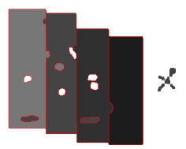

轮廓提取工具实质是对图像进行亚像素边缘提取，获取边缘点，再对边缘点进行组织形成更具几何意义的轮廓表示，用于对图像或图像中指定区域进行轮廓提取。其实际应用效果如图1所示。

| 分类 | 参数名称 | 参数描述 |
|---|---|---|
| 属性窗口 | 轮廓提取ROI | 轮廓提取的区域，分为8种，整幅图像、矩形ROI、仿射矩形ROI、圆形ROI、圆环ROI、圆环段ROI、椭圆ROI、多边形ROI。 |
| 噪声阈值 | 边缘梯度幅值平均值，小于该值的会被当做噪声。 | |
| 轮廓长度阈值 | 轮廓长度用像素点个数来度量，小于该长度的轮廓将会被剔除，不作为轮廓提取结果的一部分显示。 | |
| 实时显示结果 | 选择“是”，在改变搜索区域后，不需要运行工具，就可以实时显示结果；选择“否”，改变搜索区域后需要运行工具才会显示对应的结果。 | |
| 图像窗口 | 输入图像 | 显示待检测的图像。 |
| 矩形ROI | 图像中参与查找的矩形区域。 |
|
| 仿射矩形ROI | 图像中参与查找的仿射矩形区域。 |
|
| 数据链 | 输入图像 | 输入图像宽度、高度、像素大小，同图像窗口的输入图像参数。 |
| 二维线性变换 | 目标相对于模板的平移、旋转、缩放变换。 | |
| 高级界面 | 无 |
| 分类 | 参数名称 | 参数描述 |
|---|---|---|
| 监视窗口 | 输入图像 | 输出图像宽度、高度、像素大小。 |
| 所有轮廓 | 输出满足预设条件的结果点坐标。 | |
| 轮廓链 | 输出每个轮廓链的坐标点。 | |
| 轮廓总数 | 输出轮廓的个数。 | |
| 执行结果 | 工具执行结果。 | |
| 执行时间 | 工具执行时间。 | |
| 图像窗口 | 输入图像 | 显示与振镜坐标相关联的图像，同监视窗口的输出图像参数。 |
| 所有轮廓 | 显示满足预设条件的轮廓，同监视窗口的所有轮廓参数。 | |
| 执行结果 | 显示工具执行结果，执行成功显示“OK”，执行失败显示“NG”，同监视窗口的执行结果参数。 | |
| 数据链 | 所有轮廓 | 输出满足预设条件的结果信息，供后序工具使用，同监视窗口的所有轮廓参数。 |
| 轮廓链 | 输出每个轮廓链的坐标点，供后序工具使用，同监视窗口的轮廓链参数。 | |
| 轮廓总数 | 输出轮廓的总个数，同监视窗口的轮廓总数参数。 |
矩形ROI是指提供交互的矩形框，可在图像上选取感兴趣区域。用户可以调整矩形框的中心位置以及宽度和高度，通过鼠标拖动矩形框，可以调整矩形框的宽度和高度，选中矩形框的边可以调整矩形框的位置。
仿射矩形ROI是指提供交互的仿射矩形框，可在图像上选取感兴趣区域。用户可以调整仿射矩形的X、Y边长度，旋转角度、切变角度以及仿射矩形的位置，通过鼠标拖动仿射矩形框，可以调整仿射矩形框的宽度、高度、旋转角度和切变角度，选中矩形框的边可以调整仿射矩形框的位置。
无
参见“\Samples\轮廓提取工具.gvp”。